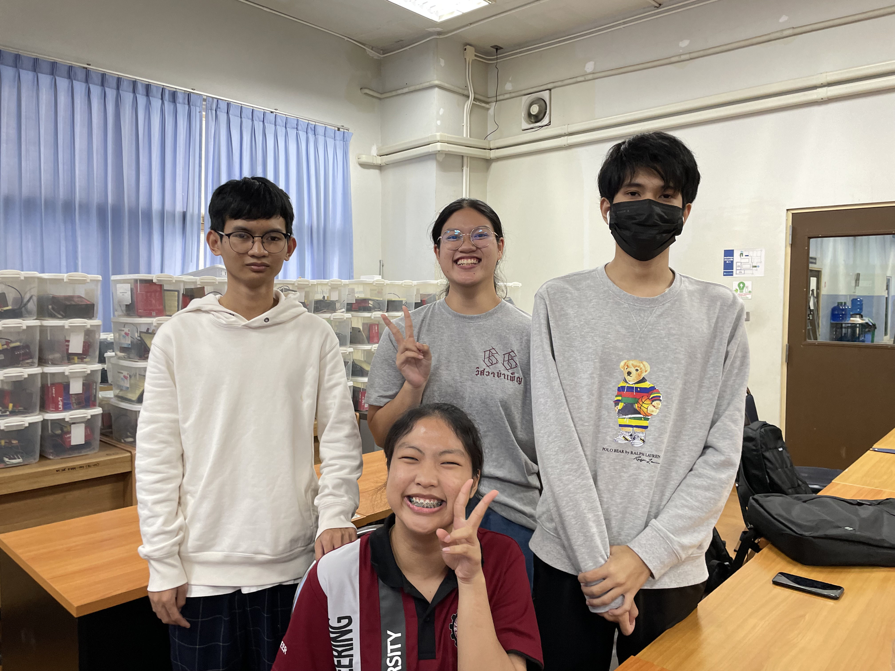

Experience doing a programming project for the first time in my life !!
- การทำโปรเจ็คครั้งแรกของฉันคือการทำเกี่ยวกับเกมตอนที่ฉันอยู่ปี1 โดยสร้างมาจากเว็ป Scratch ซึ่งเป็นส่วนหนึ่งของวิชา Basic Computer Engineering การทำโปรเจ็คครั้งนี้ทำให้ฉันจำไม่เคยลืม ฉันรู้สึกโตและเก่งขึ้นเยอะมากๆจากเดิม เพราะว่าในตอนนั้นความรู้เกี่ยวกับการเขียนโค้ดของฉันเริ่มจากศูนย์จริงๆ ระหว่างที่ทำโปรเจ็คมีหลายครั้งที่รู้ท้อแท้และสิ้นหวังมากเนื่องจากเราทุกคนเจอปัญหามากมายและผลลัพธ์ของเกมไม่ออกมาตามที่หวัง แต่พอฉันมองย้อนกลับไปฉันรู้สึกขอบคุณเพื่อนๆในกลุ่มทุกคนที่สอนอะไรหลายๆอย่าง อย่างใจเย็นและให้คำแนะนำกับฉันมาตลอดและฉันรู้ภูมิใจในตัวเองมากๆที่ผ่านการทำโปรเจ็คครั้งนั้นมาได้
My hobby
- อ่านหนัง: หนังสือแนวที่อ่านจะเป็นแนวจิตวิทยา, พัฒนาตัวเองและหนังสือนิยาย
- ฟังเพลง: ฉันฟัง kpop และเพลง popสากล
- เต้นโคฟเวอร์
My first part-time work experience
- ฉันหางานพาร์ทไทม์ทำช่วงปิดเทอมตอนก่อนขึ้นปี2 ฉันไปสมัครเป็นเด็กเสริฟในร้านอาหารแห่งหนึ่งในตัวเมืองเชียงใหม่ วันแรกของการทำงานฉันตื่นเต้นมากแต่สังคมเพื่อนๆที่ทำงานน่ารักกันมากๆที่คอยช่วยสอนงานตลอด ฉันทำอยู่ประมาณ2เดือนเป็นช่วงเวลาสั้นๆที่ได้สอนอะไรมากมายและเต็มไปด้วยความทรงจำที่ดีที่ฉันจะไม่มีวันลืม ตลอดเวลาที่ทำงานฉันได้พบเจอและต้องจากลาผู้คนเยอะมากเนื่องจากเป็นร้านที่มีคนมาสมัครเข้าทำงานเเละลาออกไปเรียนบ่อย ฉันร้องไห้เวลาเพื่อนลาออกบ่อยมากเนื่องจากส่วนตัวเป็นคนที่ผูกพันธ์กับคนง่าย แต่ประสบการณ์ครั้งนี้ทำให้ฉันได้รู้สึกว่าตัวเองได้โตขึ้นอีกครั้งสิ่งที่ได้กลับมามันมีความหมายมากกว่าการทำงาน